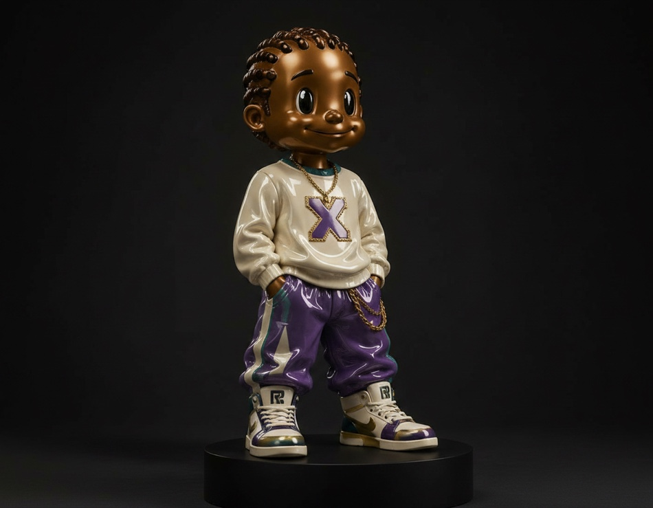
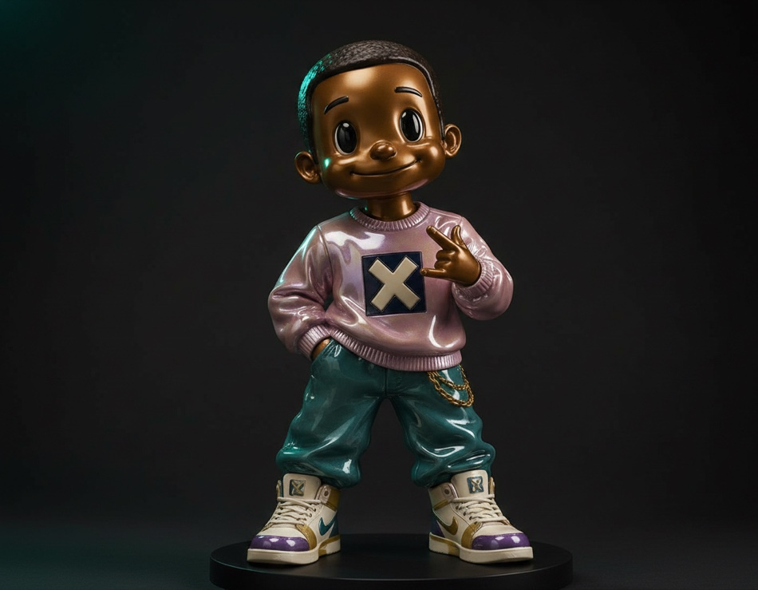
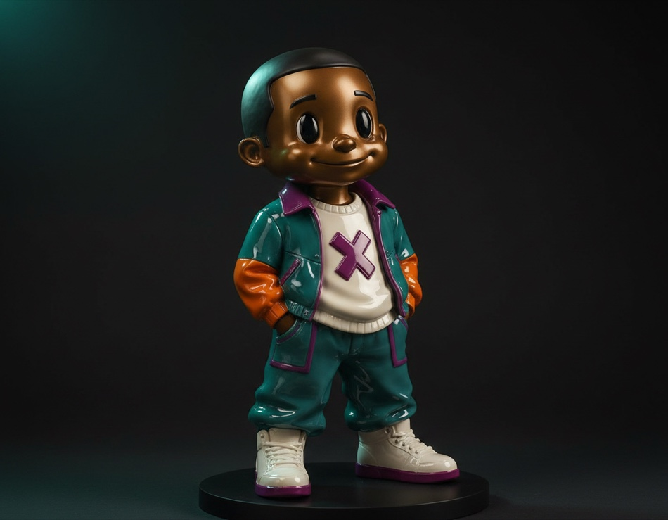
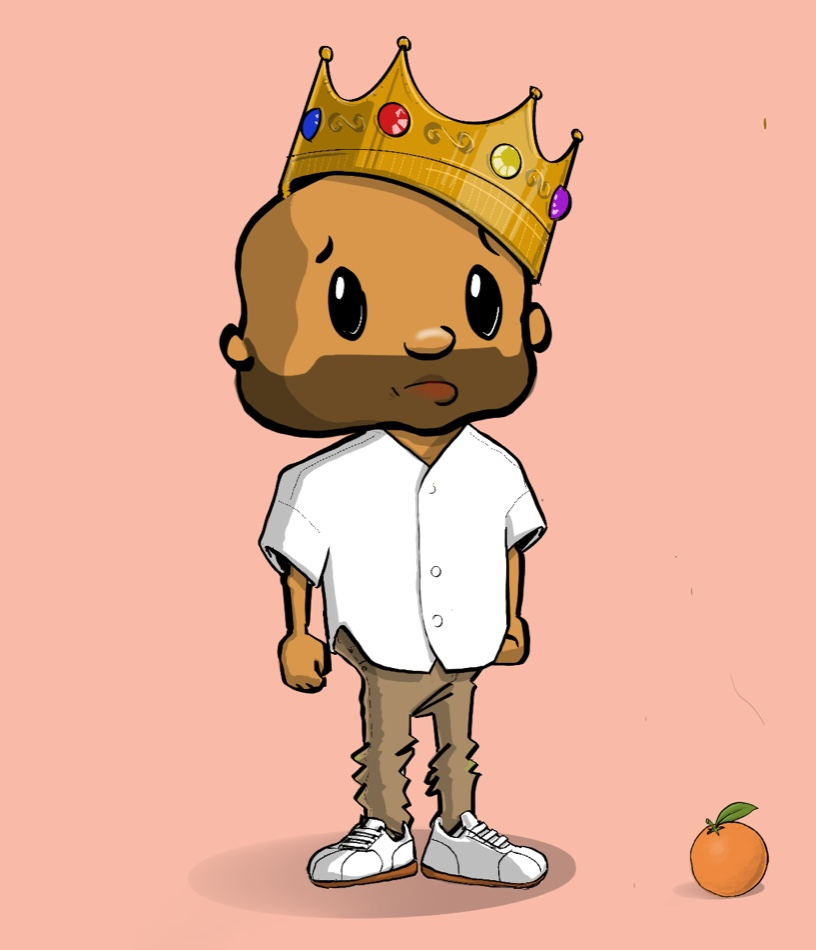
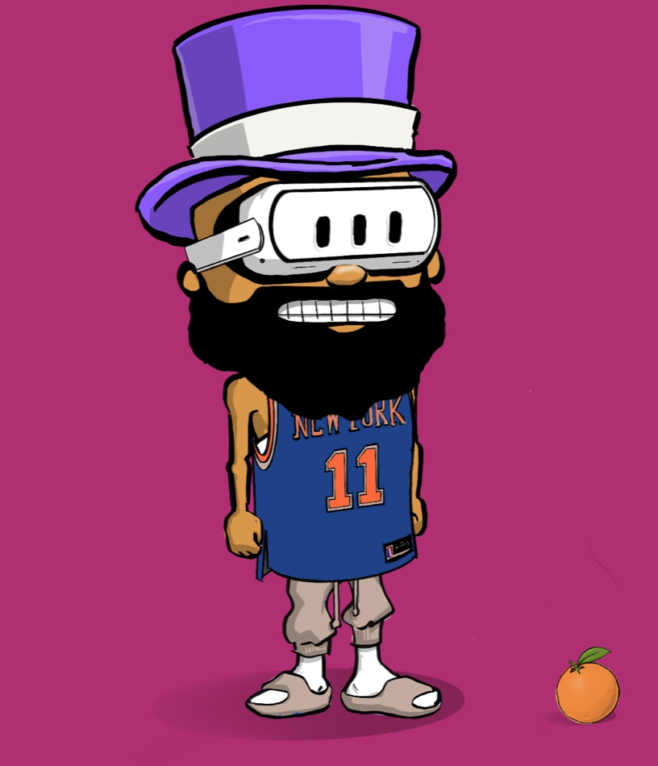
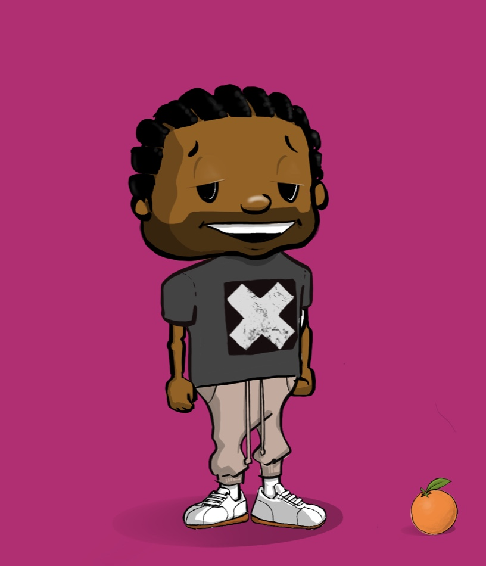
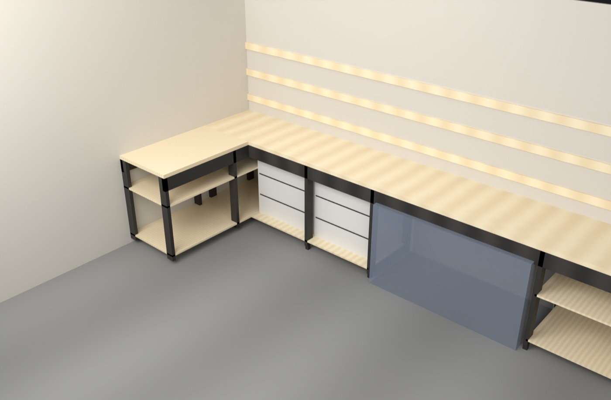
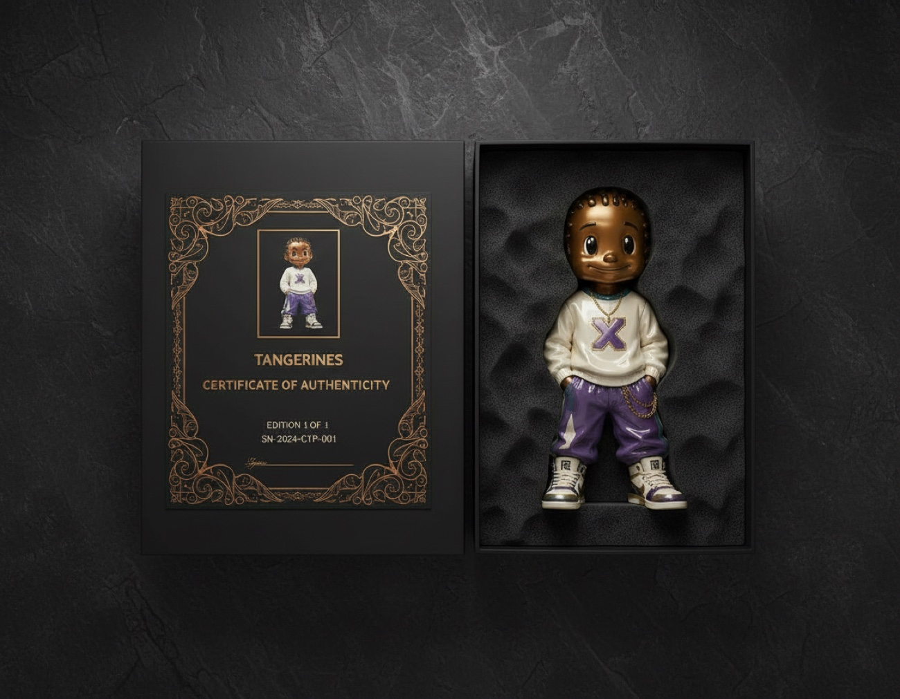

A limited run of 3D-printed figures. Each one is one of a kind, and each one is finished by hand in copper and glossy porcelain.
"A generative algorithm builds each character. A 3D printer realizes the geometry. An artist hand-finishes the surface. An NFC chip binds the physical object to its on-chain twin. You own the whole thing."
At 15 inches tall, a Tangerine is not a desk toy. It is big enough to hold a room, and it pulls you across it.
Each figure ships on a charcoal pedestal. The size is the point. The copper and porcelain finish is the first thing you notice from across the room.



Three characters, one signature. The copper skin never changes. Everything else does.
Every Tangerine has the same skin: warm copper, airbrushed and sealed under high-gloss epoxy. It reads like polished metal in the light. The copper never changes, so you know a Tangerine the moment you see one.
The clothes are where it changes. Each piece has its own bold color, glazed and wet-looking. White hoodie. Purple pants. Teal jacket. Blush sweater. Every color meets the next at a raised seam, built right into the shape.
Chains, hardware, and crown jewels stay bright gold against the glaze. Nothing on the figure is matte.
"The finish is the artwork. It is not paint on a toy. It is what the object is made of."
Every character is built from traits: hair, eyes, clothing, accessories. They are not thrown together at random. Each one starts from a set cast of characters with their own look, then the algorithm renders the mix so every result holds together.
No two figures are the same, but they all clearly belong to the same world.
The system runs on a custom model trained on a hand-picked set of Dorian's art. It stays on-character across every mix of traits, and it handles new combinations it has never seen before.
Most generative art asks you to buy blind. You mint a mystery, then find out what you own. Tangerines does it differently. At any moment, three figures are up for sale, fully shown. You see every trait and every color before you buy. You don't gamble. You choose.
And what you pick is already being made. The moment a figure is birthed, it is shown and sent into production at the same time. So the three on offer are not just pictures. Each one is a real piece already taking shape.
Buy one, and the algorithm births the next: a new character brought to life, shown in the open spot, and sent into production the instant it exists. The three are never empty. You always know what you are taking home. But what comes beyond the three is unknown. No roadmap. No preview. It does not exist until the algorithm makes it.
You choose from what you can see. The mystery lives in what comes next.
The idea was birthed a few years ago. In 2024, Dorian drew the first Tangerines by hand: a whole cast of characters, each with its own face, outfit, and attitude. Those drawings are the seed of everything that follows.



After printing, every figure is finished by hand in the studio. Sanded. Primed. Airbrushed in metallic paint. Sealed under a clear coat, then polished to a deep gloss.
This is where the metal and glazed-porcelain looks come from. Not the plastic it is printed in, but the finish laid on after. The surface makes the object.

A dedicated studio is being built for this drop: spray booth, airbrush, curing station, and polishing bench. None of it is outsourced. Every figure is finished by the artist's own hand.
"I'm a generative artist. Tangerines started a few years ago with one question: can an algorithm and a printer make something that feels handmade? I write the systems, I run the models, and I finish every figure by hand. No committee. No focus group. One person deciding what this is."
Dorian Collier · Artist
The idea goes back to 2023, with a first prototype run in 2024: the first print, the first files, the first proof it could stand in the world. Everything since has been the work of making one figure worth owning.
The figure and the token are made as one thing, from the first sketch. An NFC chip in the figure links them: tap it, and the token answers. The chain holds the record. The figure holds the body. Neither is complete on its own.
15-inch 3D-printed sculpture, hand-finished in copper and porcelain. Sits on its pedestal. Exists in the world. Has weight, light, shadow. Can be displayed, moved, inherited.
An on-chain token that carries the figure's trait record, generative seed, and provenance chain. Verified on Art Blocks infrastructure. Transferable. Permanent.
The whole process is saved and repeatable: source art, model settings, build files, paint specs. Every figure can be traced all the way back to the first drawing. That is the record of your object.
Every figure comes with a certificate of authenticity, and it is anything but a generic slip. Like the figure, each certificate is generative: made for your piece and no other. It carries a printed image of your exact figure, its edition number, and a unique serial. The border is its own one-of-a-kind pattern, drawn for that piece alone. Figure and certificate are birthed together, and matched for life.

Shown: a 1 of 1 with its matched certificate. Every card is unique to its figure.
Tangerines launches as a Studio release at Art Blocks' Marfa event, one of the best-known stages in generative art. One limited drop. The NFT mint and the physical figure ship together. This is not a someday plan. It has a date.
This preview goes to a small group before the drop opens. To get on the early list, with first access and a spot before the public mint, send an email.
dorian.collier@gmail.comNo mailing list. No form. A conversation about whether this is the right fit.